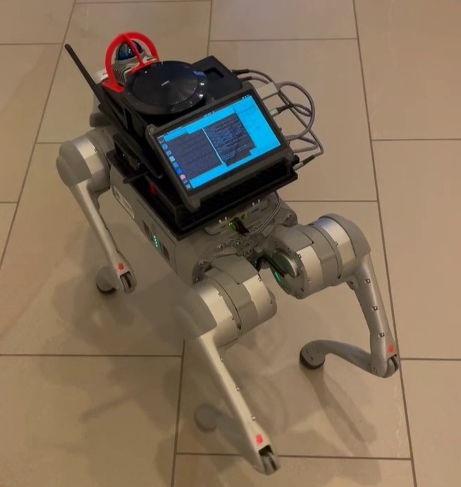
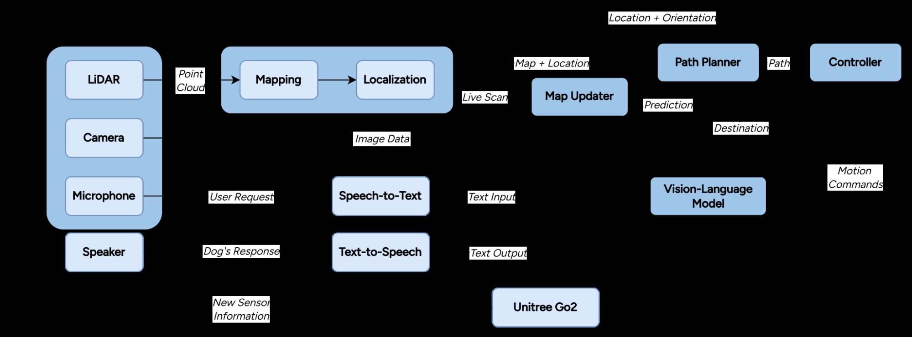
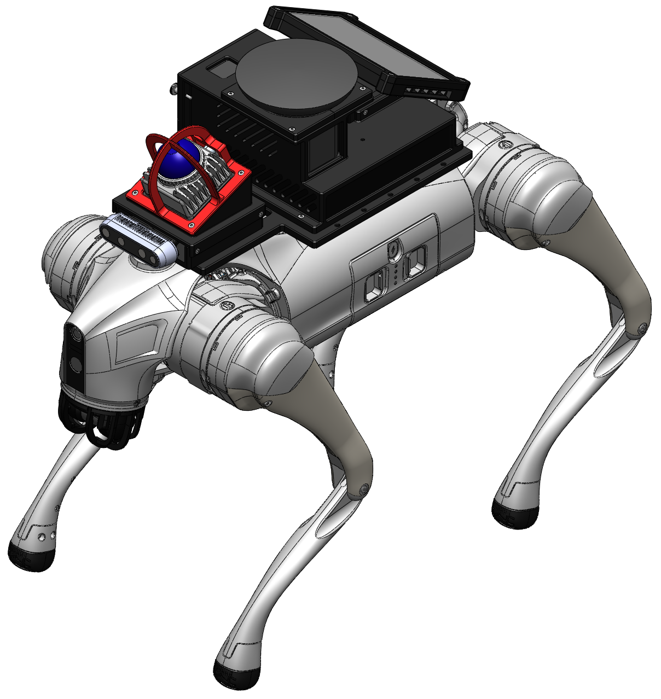
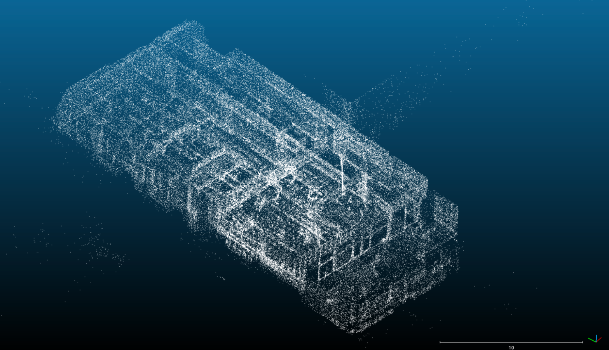
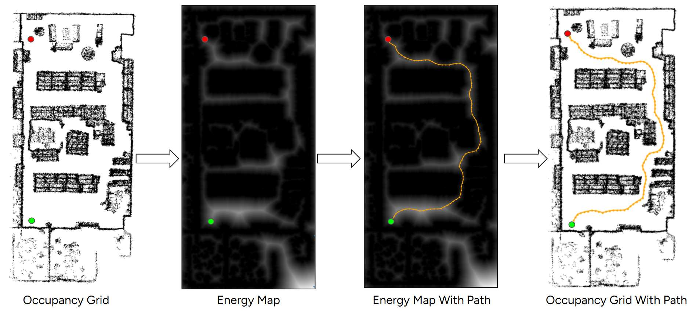
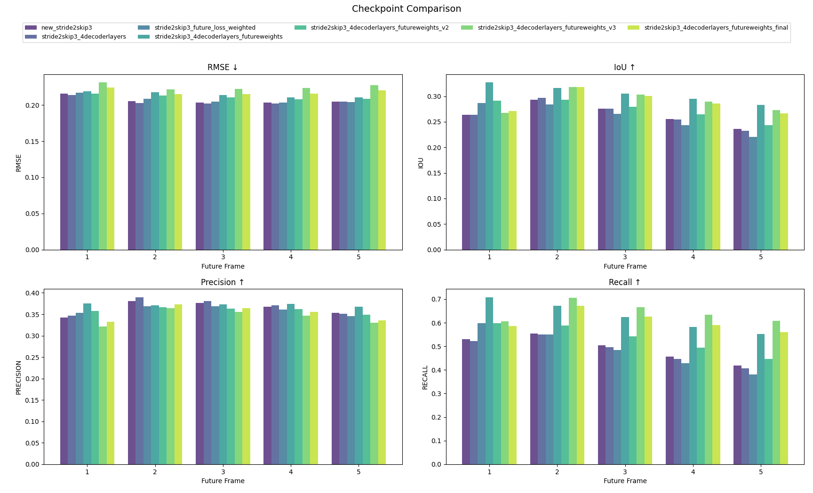
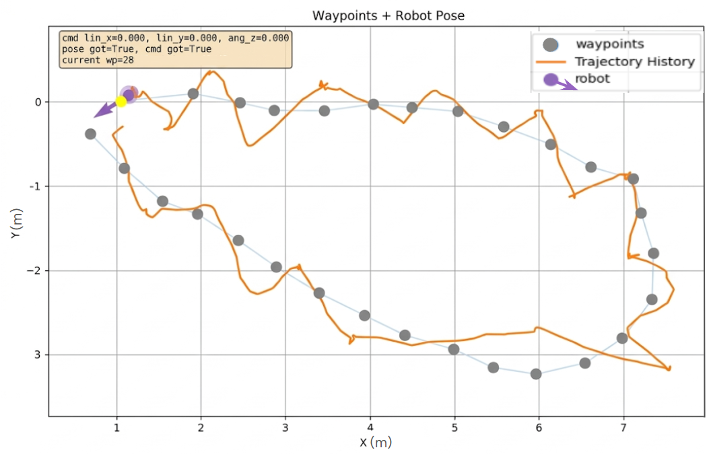
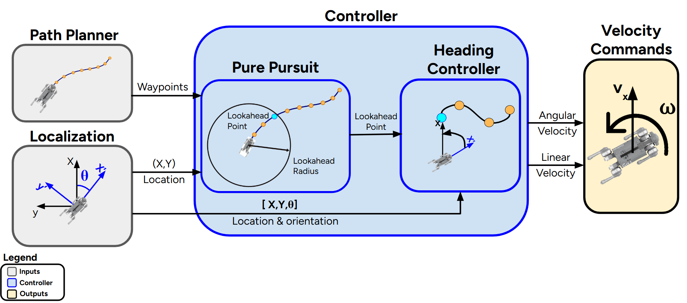
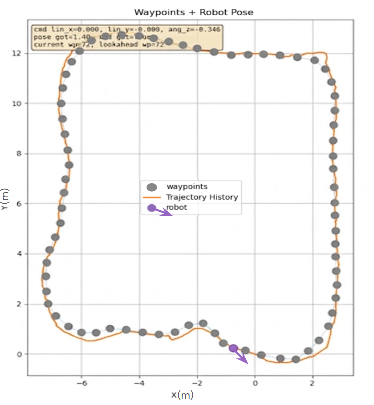
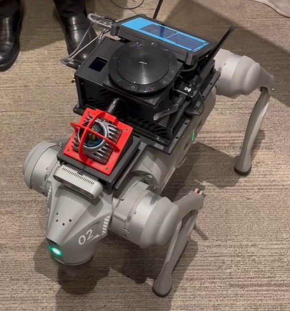

{kind=link}

PAWS (Prediction and Wayfinding System) was my Engineering Physics capstone, a year long project in ENPH 479 sponsored by Dr. Renjie Liao of UBC's Department of Electrical and Computer Engineering. His lab built TrajFlow, a multi-modal motion prediction framework that had only ever been validated in simulation, and he wanted to know whether trajectory prediction could actually improve navigation on a physical robot in the real world.
I answered that question by building a voice controlled autonomous guide dog on a Unitree Go2 quadruped and deploying it at the 2026 Engineering Physics Project Fair, a crowded indoor venue with live pedestrian traffic. You speak a destination to the robot, it plans a route through a crowd, predicts where the people around it are about to move, and walks you there.
My role was the controls subsystem. I owned the module that turns a planned path plus a live pose estimate into linear and angular velocity commands for the quadruped, and I spent most of the year on it: baseline bring up, a PD controller that failed, the adaptive Pure Pursuit tracker that replaced it, and the predictive speed profiling that made it safe around people. Along the way I also did a large share of the system integration, the on-robot deployment of the prediction model, and most of the debugging infrastructure the rest of the stack was developed against.
System architecture
{kind=link}

Five subsystems run as a pipeline:
- Perception: LiDAR SLAM builds an HD point cloud map of the venue, then localizes the robot inside it in real time using ICP registration.
- Path planner: A* over a 2D occupancy grid with a clearance biased cost, followed by an elastic band smoother, publishing waypoints.
- Map updater: a CNN and Transformer encoder-decoder that predicts future occupancy grids so the planner can route around where people are going, not just where they are.
- Controller: my subsystem, an adaptive Pure Pursuit tracker with a turn in place recovery state machine.
- Vision language model: speech to text, destination selection from natural language, and spoken responses about what is blocking the path.
Hardware
{kind=link}

The Go2 EDU weighs about 15 kg and is rated for an 8 kg dynamic payload. The build adds roughly 3.3 kg of external hardware on custom 3D printed mounts:
| Component | Role |
|---|---|
| Livox MID-360 | 360 degree LiDAR for mapping and localization |
| Intel RealSense D435i | Front facing RGB-D camera for the vision language model |
| Lenovo ThinkCentre M910q | Perception, controls and VLM compute |
| NVIDIA Jetson Orin Nano | Onboard compute for path planning and visualization |
| Alfa AWUS036ACM | USB Wi-Fi adapter |
| Anker 737 power banks | Portable power for the payload |
| 7 inch Raspberry Pi display | System monitoring and live debugging |
| Jabra Speak 510 | Audio in and out for voice commands |
The LiDAR sits elevated and inclined at 22.5 degrees so it can see floor level obstacles while keeping broad spatial awareness, and lives inside a cage printed in ASA to survive impacts. The Go2's onboard Jetson alone could not run kinematics, SLAM and multimodal inference at once, which is why the perception and controls workloads were distributed to an external PC.
Perception
{kind=link}

The project started with camera based SLAM, and it was the single biggest risk to the whole system. The localization would drift by roughly 2 metres while the robot turned in place, which is an error no amount of downstream control can compensate for. I ran the early controller tests against it and the robot could not complete a lap without getting lost.
Fixing that took most of the fall. I remapped the lab many times, bagged localization data up to the moment of failure so it could be replayed and debugged offline instead of chasing it live with the robot, and traced one class of error to the extrinsic calibration: the pose was being reported at the LiDAR, which is mounted ahead of the robot's centre, so turning in place looked like driving in a circle. The project eventually moved to a LiDAR based, graph optimization SLAM pipeline with ICP localization, and the problem went away.
I also worked out that the Go2 itself was leaning left as it walked. Leg and IMU calibration did not fix it, and the foot force data showed consistently higher load on the left legs, so I measured the drift and applied a 0.02 rad/s clockwise angular offset to the motion commands. After that the robot walked straight enough for the controller to do its job.
Path planning
{kind=link}

Planning on a flat floor reduces to a 2D search on a binary occupancy grid. Rather than plain shortest path, the cost of a cell decays exponentially with its distance to the nearest obstacle, which turns open corridors into low energy valleys and biases A* toward walking down the middle of them. An elastic band smoother then relaxes the result under a Laplacian smoothing force and a clearance repulsion force.
Integrating the controller with the planner is where the geometry of the robot showed up. The planned paths passed close enough to walls that the Go2's protruding nose collided with them, which raising the corridor half width and deepening the energy valleys resolved. Tuning the smoother had a similar trade off: past about 75 iterations the path became smoother but drifted off the valley centres, so it settled around 50.
Map updater
{kind=link}

The map updater is what makes this a prediction system rather than a reactive one. It takes a history of occupancy grids plus the robot's own linear and angular velocities, and outputs five future occupancy grids. A convolutional encoder extracts spatial features, a Transformer encoder captures spatio-temporal structure across frames, and a Transformer decoder autoregressively predicts future representations that a transposed CNN reconstructs into grids. The predicted grids are weighted by a Boltzmann distribution over their prediction horizon and composited onto the static map before A* runs, so the planner routes around where a person will be.
I deployed this model on the robot. The first run on the Jetson Orin took about 2.4 seconds per inference in PyTorch even at FP16, which is far too slow to plan against. After optimization work and model iteration it came down to a median inference of about 0.07 s and a median full cycle of about 0.11 s, predicting 2.5 seconds into the future. I also raised the planner's timer from 500 ms to 100 ms so the plan could actually track the predictions, added thresholding on the output frames, and later moved the model into the path planning process as a worker thread, which cut another 100 ms of ROS 2 messaging latency.
Controls
The controller is the kinematic engine of the stack. It takes waypoints from the planner and a real time pose from SLAM and outputs linear and angular velocity commands, with the objective of minimizing cross track error so the robot does not sweep into obstacles or people.
The baseline, and why it failed
I started with the simplest thing that could work: a decoupled controller that rotates to face the next waypoint, then translates toward it at a fixed speed. That was enough to prove out the interface with the planner and to learn the platform's dynamics, so I mocked the planner input as an array of coordinates and got the robot following a path before path planning existed. Scaling that baseline to a continuous PD controller is where I hit the physical limits.
{kind=link}

Tracking discrete waypoints without any geometric prediction of the path caused severe lateral oscillation and overshoot. The robot got there, but it wove the whole way, and weaving is not a cosmetic problem: it enlarges the robot's swept volume and directly raises the collision risk in a crowd. That behaviour was unacceptable for a robot meant to guide a person through people, so I replaced reactive point tracking entirely.
Adaptive Pure Pursuit and a recovery state machine
{kind=link}

The replacement is a hybrid state machine around a Pure Pursuit tracker. Pure Pursuit computes the continuous arc that drives the robot toward a lookahead point rather than the nearest waypoint, so the path curvature is followed instead of chased.
Two changes to the standard algorithm mattered:
- Dynamic lookahead. I scaled the lookahead distance directly with the robot's linear speed. Looking further ahead at speed dampens steering commands and keeps the robot stable; shrinking the lookahead during slow cornering forces tight tracking.
- Plane crossing waypoint advance. The controller advances to the next waypoint once the robot crosses the perpendicular plane of the current segment, which stops it circling a waypoint it slightly missed.
Pure Pursuit degrades badly when the robot is severely misaligned with the path, commanding huge recovery arcs that leave the safe corridor. To handle that, a turn in place mode governed by a hysteresis band takes over: above an upper heading error threshold the robot halts forward motion and rotates in place under a PD heading controller, and it only returns to continuous tracking once the error falls below a lower threshold. The gap between the two thresholds is what prevents mode chattering. I later extended this so that a goal more than 100 degrees behind the robot triggers a fast turn in place before it starts moving at all.
{kind=link}

Predictive speed profiling and safety
Following the path closely is not the same as taking it safely. To handle corners I built a predictive speed profiler using Menger curvature, which gives the curvature of the circle through three points. By evaluating upcoming path coordinates the controller estimates how sharp a turn is before entering it and caps linear speed to stay inside safe lateral acceleration limits, throttling further if heading corrections or cross track error grow.
The Go2 is holonomic, so I used that to kill steady state lateral drift: a PI controller commands a direct lateral velocity from cross track error, letting the robot slide back onto the centreline instead of weaving to correct. This one needed care. An early version of lateral correction increased turning velocity instead, which reintroduced overshoot, and a later version jittered and roughly doubled the traversal time on a long path until I removed it and retuned. The version that shipped uses a modest lateral integral gain to hold centre on long straightaways.
A hardware e-stop monitors the whole node and zeroes every output until an operator clears it, and I wired the wireless controller so a human can override the autonomous node at any time.
Tuning and results
Most of the controller's real behaviour came out of tuning against physical runs. Waypoint spacing turned out to matter as much as gains: points closer than roughly 0.8 m made the robot over correct, so the planner resamples at a spacing that keeps motion smooth. The parameters I locked in for the fair were a 1.0 m lookahead, 0.8 m/s maximum linear speed and 1.0 rad/s maximum angular speed, with a 0.2 lateral integral gain.
By the end the robot was roughly three times faster than the first working version, following the planner's path closely, slowing itself before sharp turns, and recovering its heading without leaving the corridor. On a branch I pushed it to 1.5 m/s, during which it shoved a chair into a colleague's coffee. The laptop survived and the robot was unbothered.
Debugging infrastructure
A large part of what I contributed was not in the final control law. Early on, testing meant remoting into the onboard Jetson over Wi-Fi, and every dropped connection killed the session and required a reboot. A router did not help and neither did a laptop hotspot. Connecting my laptop to the robot over Ethernet made the display instant, which unblocked both controls and perception for the rest of the project. I later set up an SSH workflow so code could be edited locally and built and run on the robot, and screen mirroring to my phone so I could watch the top down planner view while walking behind the robot.
I also wrote the Python visualizer that the rest of the stack was developed against. It subscribes to the localization and controller topics, overlays the planned waypoints, the robot's pose and heading, and the actual traced trajectory, and prints the live motion commands. Over time I added timestamps every ten seconds, colour coding for the pursued and passed waypoints, plots of the derivative term so I could reason about the PD gains, and direct goal entry in the visualizer, which cut five to ten minutes off every test run.
Toward the end, path planning running on the external PC was loading it enough to make localization fail. Porting the planner onto the Jetson fixed the failures and rebalanced the whole system.
Conclusions
- Predictive tracking is necessary for safe physical navigation. Reactive PD tracking produced dangerous lateral oscillation. Operating safely in constrained indoor space required adaptive Pure Pursuit and clearance biased A*.
- Onboard compute is insufficient for multimodal AI robotics. The Go2's internal Jetson cannot simultaneously handle kinematics, SLAM and VLM inference. Distributing the workload is required to keep the control loop stable.
- Transformer based models bridge the gap for dynamic avoidance. The map updater captured real spatio-temporal structure, showing that attention mechanisms can translate simulated trajectory prediction into physical path planning adjustments.
- Network dependence and erratic human motion are the main remaining risks. Offloading inference makes the system vulnerable to Wi-Fi drops, and real pedestrians are considerably less predictable than simulated ones.
If I were taking this further, the obvious next steps are replacing the classical tracker with a reinforcement learning policy trained in simulation, integrating online SLAM to drop the pre-recorded map requirement, and collapsing the modular stack into an end to end vision language action model that maps sensor data and speech straight to velocity commands.
{kind=link}
